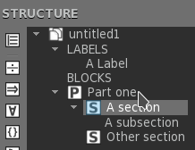

Texmaker comporte les commandes habituelles d'un éditeur classique : Copier, Coller...
Elles sont accessibles via le menu "Edition" et la première barre d'outils.
La sélection par bloc rectangulaire est disponible en appuyant sur la touche Alt pendant l'utilisation de la souris.

Il y a plusieurs façons de rédiger le préambule de son document LaTeX.
La première consiste à utiliser la commande "Démarrage rapide" du menu "Assistants" :

on peut y fixer les principales caractéristiques de son document (classe, format...). Les boutons "+" permettent de rajouter ses propres options. Tous ces réglages sont enregistrés : l'utilisateur les retrouvera à la prochaine utilisation de l'assistant.
On peut aussi utiliser un modèle de préambule que l'on a préalablement enregistré. Il suffit alors d'utiliser "Enregistrer sous" ou un "copier/coller" pour l'utiliser comme base de son nouveau document.
L'un des points forts de LaTeX est la structuration des documents. Pour définir une nouvelle "section" avec Texmaker, il suffit d'utiliser cette liste de la barre d'outils :
On n'a plus qu'à indiquer le titre voulu et si l'on désire que cette section soit numérotée (elle fera alors partie de la table des matières) :

Texmaker facilite la navigation dans un long document LaTeX grâce à la vue structure située à gauche de l'interface :

Un simple clic sur un item permet d'atteindre la ligne correspondante dans l'éditeur. Cette vue structure est actualisée automatiquement lors de la frappe. L'utilisateur peut aussi utiliser la commande "Rafraîchir Structure" du menu "Edition" à tout moment.
Pour chaque fichier, l'utilisateur peut définir trois "signets" pour accelérer la navigation dans un document. Pour ajouter ou supprimer un "signet", il suffit de cliquer sur un numéro de ligne. Quand vous avez déja défini trois signets, il faut en supprimer un pour pouvoir en ajouter un nouveau. Pour atteindre la ligne correspondante à un signet, il suffit de cliquer sur les boutons "1,2,3" dans la barre d'état de Texmaker.

Le formatage du texte peut se faire rapidement avec ceci :

Une des caractéristiques de Texmaker est la possibilité de sélectionner le texte à formater avant de cliquer sur ces boutons. Les balises LaTeX adéquates entourent alors automatiquement le texte sélectionné.
Les commandes d'espacement usuelles sont disponibles dans le menu "LaTeX - Espacement".
Le bouton "Retour à la ligne" (raccourci-clavier : Ctrl+Return) permet aussi d'insérer rapidement le code LaTeX pour un retour à la ligne.
Le menu "LaTeX - Listes" permet d'insérer rapidement le squelette des environnements listes traditionnels de LaTeX. Le raccourci-clavier pour insérer rapidement un item est : Ctrl+Shift+I.
Texmaker propose un assistant permettant d'insérer le code adéquat pour la plupart des tableaux standards. Il suffit d'utiliser la commande "Assistant tableau" du menu "Assistants". On se retrouve alors devant la boîte de dialogue ci-dessous.

On peut y définir les caractéristiques du tableau (nombre de lignes et de colonnes, alignement, séparateur...). Il est même possible d'entrer directement le texte de chaque cellule (on peut aussi les laisser vides et compléter la tableau alors dans l'éditeur). Le code LaTeX adéquat est alors automatiquement inséré.
L'"Assistant Tabulation" du menu "Assistants" permet d'insérer automatiquement le code LaTeX d'une tabulation simple grâce à la boîte de dialogue ci-dessous.

L'insertion d'une image se fait grâce à la commande "\includegraphics{}" du menu "LaTeX". En cliquant sur l'icône "fichier" de la boîte de dialogue ci-dessous, on peut alors sélectionner l'image à inclure. Remarque : en cliquant sur le bouton "+", un environnement "figure" sera automatiquement ajouté.

La deuxième liste de la barre d'outils est à la disposition des utilisateurs pour insérer rapidement les commandes LaTeX usuelles pour les références croisées et les notes de bas de page. Les labels utilisés dans le document apparaissent dans la vue structure : un clic suffit à les atteindre dans l'éditeur.
Remarque : Pour la commande \ref , Texmaker propose de sélectionner un label parmi la liste de labels détectés dans le document (utiliser la commande "Rafraîchir Structure" du menu "Edition" pour actualiser éventuellement la liste).
Le passage en mode mathématique (en ligne) se fait avec le bouton "$$" de la barre d'outils "Math" ou grâce au raccourci-clavier Ctrl+Alt+M. Pour le mode hors-ligne, on peut utiliser la commande "$$...$$" du menu "Math" ou le raccourci-clavier Alt+Shift+M.
La barre d'outils mathématiques permet aussi d'insérer d'un seul clic les formes mathématiques les plus courantes (fraction, racine...).
Les panneaux de symboles mathématiques situés à gauche permettent d'insérer d'un clic le code LaTeX de près de 400 symboles, ainsi que les balises \left et \right (cliquer sur les boutons "symboles" de la vue structure pour cela).

Option supplémentaire : Un panneau "symboles favoris" (*) permet à l'utilisateur de créer son propre panneau de symboles.
- Pour ajouter un symbole dans le panneau "symboles favoris", il suffit de faire un clic-droit sur un symbole dans les autres panneaux de symboles et de sélectionner l'option "Ajouter aux favoris" dans le menu qui s'affiche.
- Pour supprimer un symbole du panneau "symboles favoris", il suffit de faire un clic-droit dessus et de sélectionner l'option "Retirer des favoris" dans le menu qui s'affiche.
Le menu "Math" permet aussi de définir le style du texte en mode mathématique (accents, styles de caractères,espacement)
Pour les matrices, un assistant basé sur le même principe que celui pour les tableaux est disponible dans le menu "Assistants". Il permet en plus de fixer l'environnement (array, matrix, pmatrix...). Les cellules peuvent être complétées directement dans l'assistant.

Les marques "•", automatiquement insérées par certaines commandes de Texmaker, permettent d'atteindre directement le prochain champ dans la structure qui vient d'être insérée en utilisant la touche "Tab" ("Shift+Tab" pour aller en arrière).
Note : l'insertion d'une tabulation avec la touche "Tab" est désactivée si la ligne contient une marque "•".